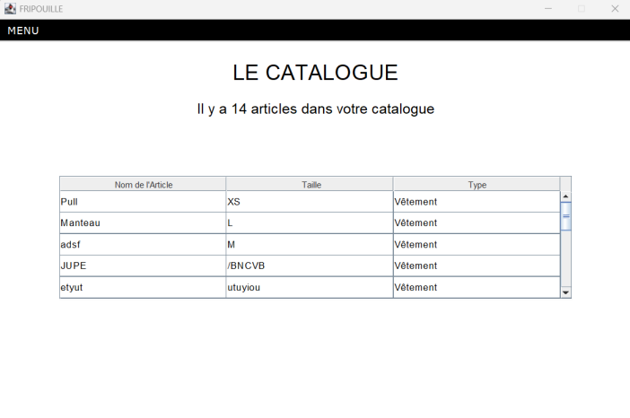

Fripouille - Application Java MVC
Présentation du projet
L'application "Fripouille" est développée en Java selon l'architecture MVC. Elle vise à gérer le catalogue des ventes d'un projet solidaire de revente de vêtements de seconde main à prix réduits.

Autocritique et bilan
Ce projet m'a permis de consolider mes compétences en Java et d'approfondir l'architecture MVC. J'ai rencontré des défis liés à la gestion des données et à l'optimisation de l'interface utilisateur.
Si je devais améliorer cette application, je mettrais en place une meilleure gestion des droits utilisateurs et une interface plus fluide.